WIKI
WIKI
Loot & world
Everything you can search, use and avoid around the world.
Containers
Right click a container: after 1 second of searching, its loot pops out and it stays open. It restocks 5 minutes later. Each one looks a little different. A vase is smashed instead of opened.
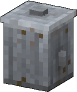
Trash CanSearch it: each line is the chance to get something of that kind.
Canned Beans, Energy Bar, Orange Soda, Chewing Gum, Banana, Peanut Butter Sandwich and 13 more
60%Scrap
60%Shuriken, Duct Tape, Virus Bomb, Electric Bomb, Sound Decoy, Fireworks Rocket and 20 more
15%Trash Can Lid
10%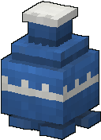
VaseSmash it: each line is the chance to get something of that kind.
Scrap
70%Shuriken, Duct Tape, Virus Bomb, Electric Bomb, Sound Decoy, Fireworks Rocket and 20 more
35%Whistle, Chewing Gum, Shuriken, Lucky Coin
20%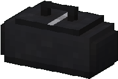
Duffel BagSearch it: each line is the chance to get something of that kind.
Baseball Bat, Golf Club, Frying Pan, Shovel, Traffic Sign, Skateboard and 10 more
50%Bandage, Medicine, First Aid Kit
50%Shuriken, Duct Tape, Virus Bomb, Electric Bomb, Sound Decoy, Fireworks Rocket and 20 more
40%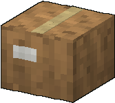
Cardboard BoxSearch it: each line is the chance to get something of that kind.
Canned Beans, Energy Bar, Orange Soda, Chewing Gum, Banana, Peanut Butter Sandwich and 13 more
80%Shuriken, Duct Tape, Virus Bomb, Electric Bomb, Sound Decoy, Fireworks Rocket and 20 more
30%Scrap
30%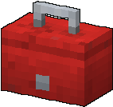
ToolboxSearch it: each line is the chance to get something of that kind.
Duct Tape, Wrench, Scrap, Fuel Canister, Lighter, Electric Cable and 2 more
100%Scrap
70%Rusty Buggy
3.0%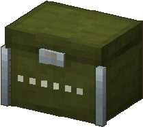
Supply CrateSearch it: each line is the chance to get something of that kind.
Baseball Bat, Golf Club, Frying Pan, Shovel, Traffic Sign, Skateboard and 10 more
100%Bandage, Medicine, First Aid Kit
100%Shuriken, Duct Tape, Virus Bomb, Electric Bomb, Sound Decoy, Fireworks Rocket and 20 more
50%Scrap
50%a random piece of a common armor set
20%Rusty Buggy
4.0%Supply drops
A Walkie-Talkie calls your allies to you. With no ally around, it calls a supply drop instead, once a day: a supply crate falls from the sky under a parachute next to you.
Distress drops
Every 20 to 40 minutes of play (the first one after 15 to 25), a plane drops a big crate 60 to 150 blocks away from one of the players. Everyone within 220 blocks hears about it.
Hold the Zombie Guidebook: for 10 minutes its compass points to the crate instead of the next town, with the distance.
When the crate lands, its beacon draws every zombie within 40 blocks, and a small group shows up around it. Clear them before you open it.
Right click it: weapons, medical supplies, gadgets, tools and a pile of scrap, maybe an armor piece or even a Rusty Buggy. It holds one haul only, then it is gone.
Special blocks
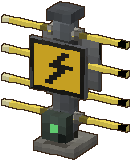
Electric Fence
Zaps and shocks every zombie that touches it (3 damage, x2 if the zombie is wet). Survivors get a small shock too. Right click: on / off. Built at the Fabricator, 4 at a time.
Fabricator: x4
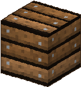
Barricades
Planks and fragile glass slow the horde down, but zombies stuck in front of them bash them to pieces. A Fire Axe smashes one in a single hit.
Block: the zombies

Unstable Floor
Cracks under every step and collapses after a moment. It rebuilds itself after a minute. Lure heavy zombies on it.
Breaks: when walked on
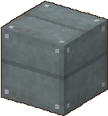
Elevator
Stand on it and jump to go up to the next elevator block, sneak to go down. Zombies cannot use it.
Use: jump / sneak

Barbed Wire
Zombies crossing it are slowed down a lot and lose 1 health per second (bosses are not slowed). It wears out as they cross it and finally snaps: lay a new one.
Trader: 4 for 4 scrap

Glue Puddle
Put it on the ground: zombies walking in it are stuck (very slow). It dries up after about 30 seconds. Built at the Fabricator, 4 at a time.
Fabricator: x4
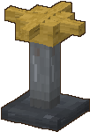
Sprinkler
Soaks every zombie within 4 blocks: wet zombies take double electric damage. It also puts out burning survivors. Put it next to an electric fence. Built at the Fabricator.
Fabricator: x1
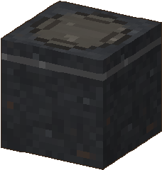
Manhole
Zombies climb out of it while a survivor is around (never more than 4 nearby), facing the nearest one. It cannot be broken, not even by an explosion: right click it with duct tape to seal it for good.
Seal: duct tape
Hazards
Virus barrels, virus bombs, the Spitter and the Warden leave clouds that hurt survivors (or zombies) inside them. The Hazmat set is immune.
Hit it and it leaks gas; set it on fire and it explodes (6 blocks).
Burning zombies spread fire. The Firefighter set never burns, and a full Water Flask puts you out.
Noise
Some zombies hunt by ear, like the Blind. They hear survivors who walk or sprint (never the ones who sneak), weapons, explosions, the guitar, popcorn... and walk to the noise. The Ninja set makes you silent; the Scrap set makes you loud.